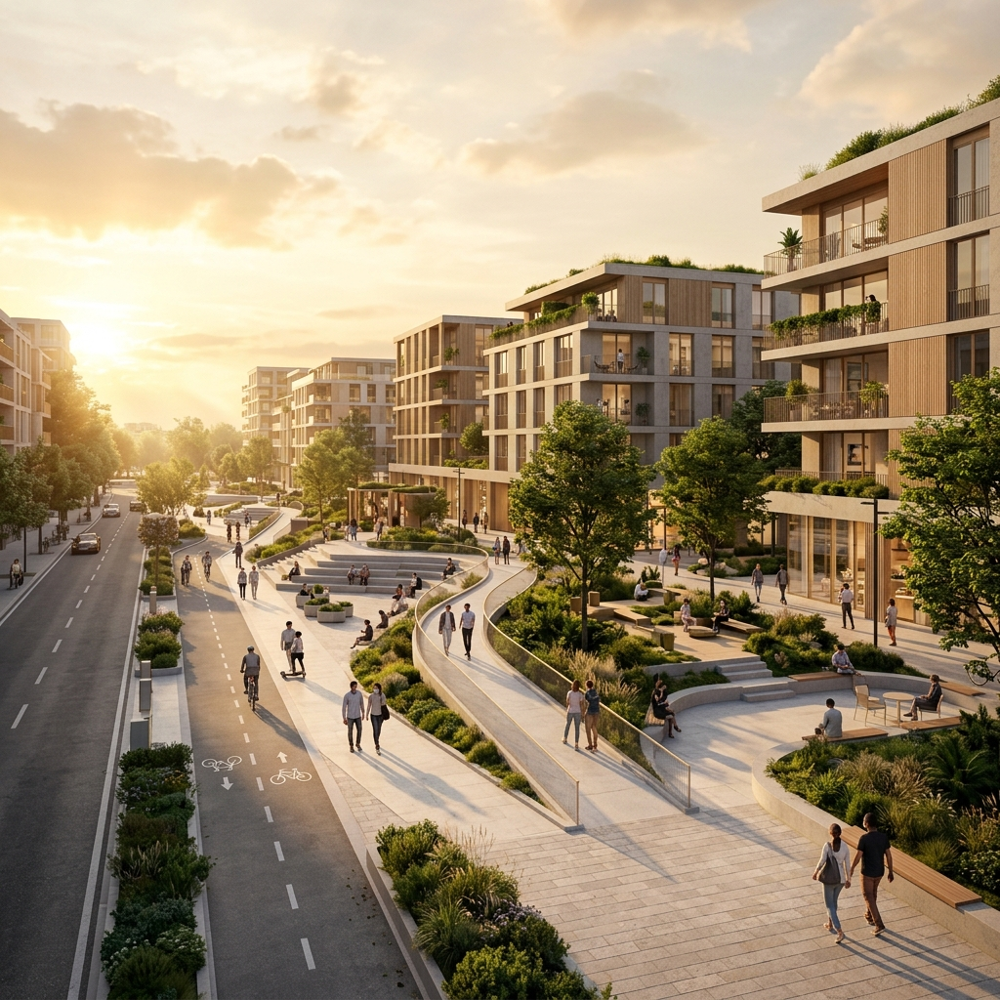

The pandemic fundamentally altered our relationship with space — where we work, how we isolate, and how we commune with neighbors. In rethinking residential architecture through this lens, new spatial hierarchies emerge that are both pragmatic and deeply human.
Addition of Spaces
In the post-pandemic world, the addition of some functions at the residential level comes in the form of a third space. Social distancing is maintained by incorporating these additional functions. Basically, direct relationships between spaces will be changed into indirect relationships.
For example, earlier a lounge had a direct connection with the bedroom. In the post-pandemic world, both spaces have an indirect relationship — you will access the bedroom through a third space. This buffer zone is not merely a corridor; it is a programmatic layer that absorbs social contact before it reaches the intimate core of the home.
Direct spatial relationships transform into indirect ones through the introduction of transitional third spaces — the fundamental spatial re-ordering of the post-pandemic home.
Hierarchy of Residential Space
The hierarchy of residential space will change. Extra space is required on a ground surface level — the built area should be less on the ground floor than the unbuilt space included in the circulation space.
Under this new arrangement, all house functions are relocated to the first floor. Only three functions remain on the ground floor:
-
1st
Vertical Access
Providing access to the upper floor where the primary living programme resides.
-
2nd
Vehicular Porch
A covered zone for automobiles that maintains distance from the primary entry sequence.
-
3rd
Quarantine Space
A carefully considered zone separating the family area from potential patient zones, with the green area surrounding it enhancing visual connection between space and nature.
"The quarantine space has a large scale of windows for increasing the transparency of space — this helps minimize the prison feel."
The green area around the quarantine space enhances the visual connection between space and nature. Large-scale windows increase transparency, minimizing any institutional feel while maintaining necessary separation. The design challenge is to make quarantine dignified rather than punitive.

The Street
In the street it is not easy to maintain social distance because the street forces you to follow a certain path. In the post-pandemic world, the conventional street concept will end.
When all major residential spaces are lifted from the ground, the ground surface transforms into circulation space — you are no longer forced to follow a specific path. Instead, level variation separates vehicular and pedestrian circulation, creating a liberated ground plane that is simultaneously safer and more communal.
All primary living functions elevated to first floor or above
Ground becomes open circulation — no forced pedestrian paths
Vehicles and pedestrians separated through topographic variation
Communal Space
The terrace on the porch will shift to the other longer axis of the house. Here, both our terrace and a neighboring house's terrace face each other — and both invite occupants into a semi-enclosed space. This becomes a communal space between two residences.
If this pattern repeats at the urban scale, it will encourage community living — a network of semi-private shared spaces that weave sociality back into the residential fabric without forcing it. The terrace becomes a space of choice rather than obligation.
When individual terrace patterns are repeated at scale, they organically foster community living — a distributed network of shared thresholds between households.
Communal Spaces as Pathways
Communal spaces will act as pathways. These spaces have multiple architectural elements that attract people — steps, for instance. But steps and podiums are complex elements in the post-pandemic context, because they invite us to come and sit, to gather, to be proximate.
They play a role in starting communication between people. Ramps are suggested for these spaces rather than steps, to regulate how people flow through rather than gather statically. Movement replaces congregation; flow replaces occupation.
This is not merely a programmatic shift but a philosophical one: architecture shaped not to anchor people in one place but to guide them gently through space while allowing spontaneous encounter to emerge from motion rather than from fixed gathering points.
Design Insights
The post-pandemic architecture shift is not a temporary response — it is a fundamental re-evaluation of how residential space is stratified, connected, and shared. The pandemic revealed vulnerabilities in our spatial complacency, and the design language that emerges from it should reflect both caution and care.
At HumanToSpace, these ideas inform every residential project we undertake — from the way we position the entry sequence to how we create distance between public and private without creating isolation.